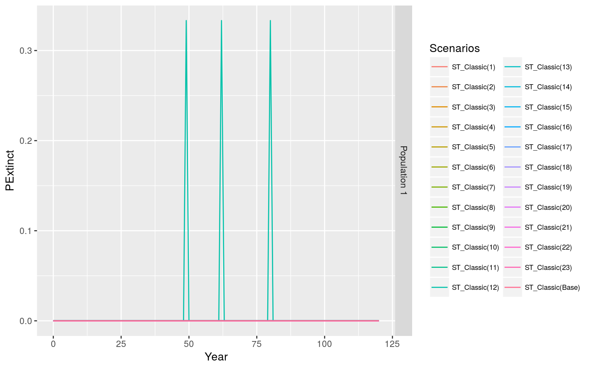
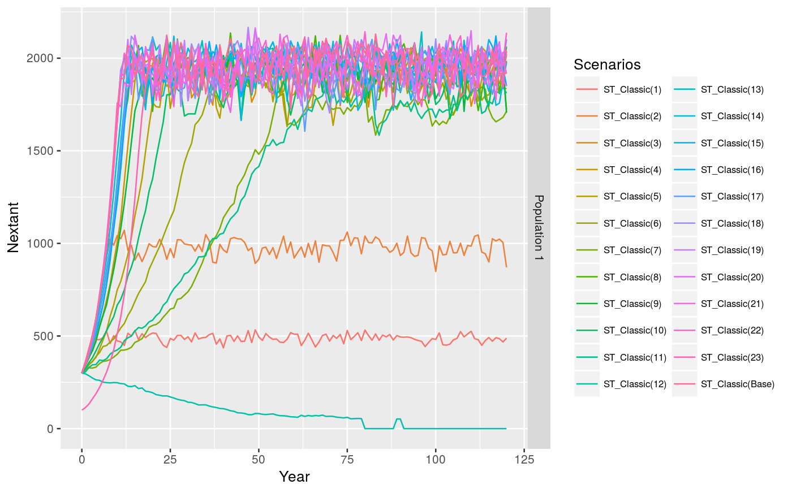
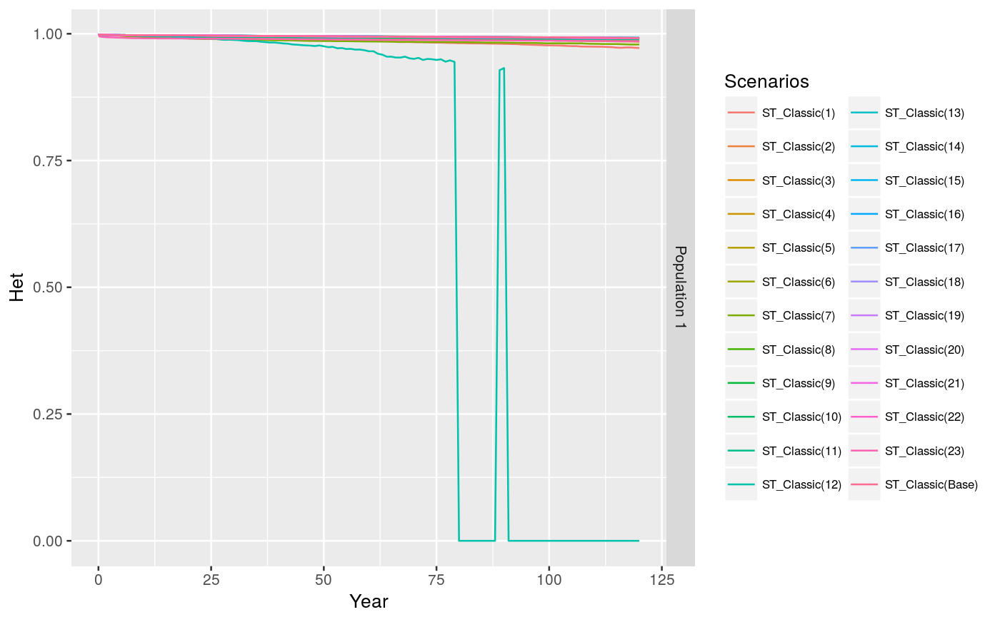
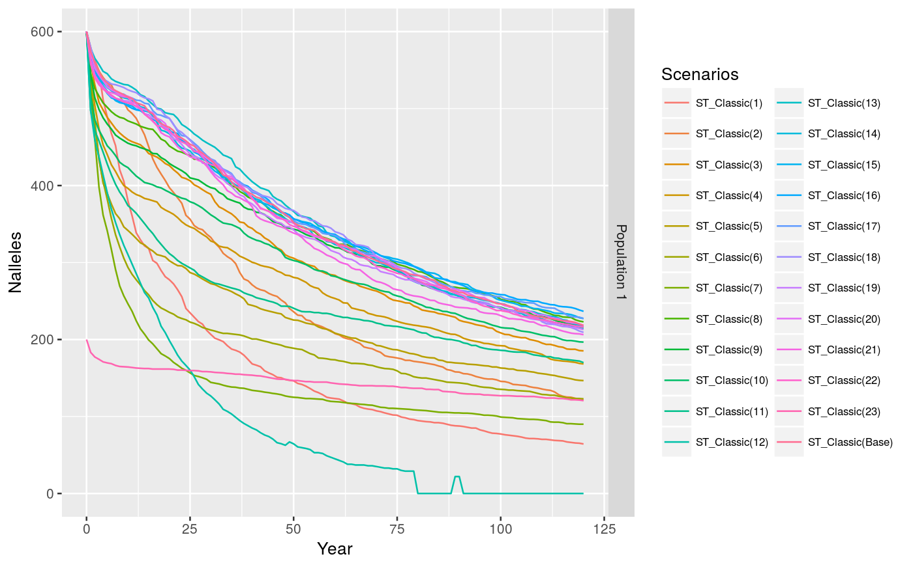

line_plot_year generates line plots of the selected Vortex parameters
for the selected populations, for all simulated years.
line_plot_year(data, project, scenario, params = c("PExtinct", "Nextant", "Het", "Nalleles"), plotpops = c("all"), save2disk = TRUE, dir_out = "Plots")
| data | A df from |
|---|---|
| project | Vortex project name (used to name the output) |
| scenario | Vortex scenario name (used to name the output) |
| params | Vortex parameters to be plotted, default: c('PExtinct', 'Nextant', 'Het', 'Nalleles') |
| plotpops | The populations to be included in the plot, default: 'all' |
| save2disk | Whether to save the output to disk, default: TRUE |
| dir_out | The local path to store the output. Default: Plots |
Line plot(s)
Plots are ggplot objects. When save2disk=TRUE these are saved as .rda
and .pdf files
# Using Pacioni et al. example data. See ?pac.clas for more details. data(pac.clas) lineplot.st.classic <- line_plot_year(data=pac.clas, project='Pacioni_et_al', scenario='ST_Classic', params=c('PExtinct', 'Nextant', 'Het', 'Nalleles'), save2disk=FALSE)